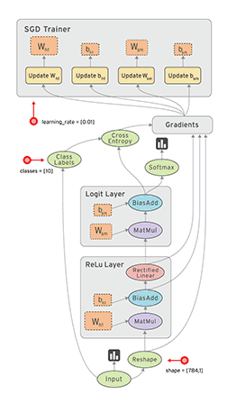

〇、随便写的话
看到山崩地裂和天花乱坠，每天得道，每天可以没有明天。
——冯唐
这是我写在新年开始的箴言，2017待我不薄，寄希望2018这关键的一年自己也能把握住。
毕竟“除了自渡与渡人，其他毫无所有，毫无所谓。”
虽然自认为做了一些事情，但是没有一件是坚持下来，要不就总在一些细枝末节的事情上纠结，要不就是单纯的懒，直到现在，越大，越怕。
2018到现在已经过去两个月了，而后面我只想……留下点痕迹吧。
话说我现在的体重估计能咋出个大坑，不只是痕迹…该减减了……
一、TensorFlow 学习准备
在 Windows 10 系统下，
IDE 是 PyCharm Community Edition 2017.2.4，
使用 python (3.5.4) 语言，
学习 TensorFlow (1.2.1).
主要我也不觉得搭个虚拟机，就会比在 windows 上直接操练更好，所以就先保持现状学起来吧，入个门在考虑环境的问题。
那么，第一个问题，
什么是 TensorFlow？TensorFlow中文社区
TensorFlow 是一个编程系统，用图来表示计算任务，在Session（会话）中执行，计算过程使用的数据用tensor来表示，并通过variable（变量）来维护状态；
所以，TensorFlow的计算过程就是：在 Session 中执行描述计算过程的 图 ，Session 将 图 中的 op（operetion，节点）分发到运算设备（CPU、GPU）上执行，产生 tensor 并返回。
除此之外，TensorFlow 还有 feed 和 fetch 两大机制，分别用来为操作赋值或从操作用获取数据。
通俗讲，TensorFlow 是一个通过数据流图（Data flow graphs）进行数值计算的软件库。

来自中文社区
二、TensorFlow 基本使用
使用 TensorFlow 的程序一般组织为两部分，构建阶段和执行阶段。
- 构建阶段
创建一个图来表示和训练神经网络（此阶段在 Python 中较 C/C++ 更容易）;
- 执行阶段
反复执行图中的训练 op;
熟悉 TensorFlow 的基本操作 Python 程序如下：
1. test1 矩阵相乘
1 | import tensorflow as tf |
2.test2 矩阵相乘（with代码块）
Python中 with 语句是与异常处理相关的功能语句。适用于对资源进行访问的场合，确保在使用后执行必要的清理操作。
语法格式：1
2with context_expression [as target(s)]:
with-body
1 | import tensorflow as tf |
3.test3 变量计数器
1 | import tensorflow as tf |
4.test4 fetch 机制
向 run() 方法传入多个 tensor，以取回多个结果。
1 | import tensorflow as tf |
5.test5 feed机制
1 | import tensorflow as tf |